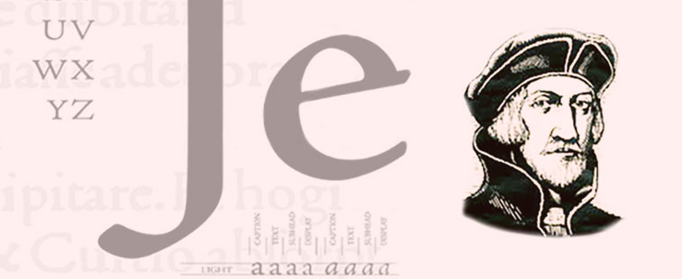
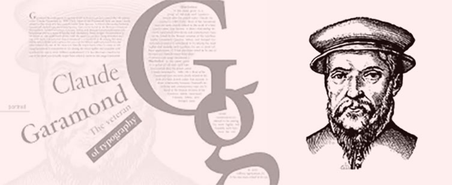
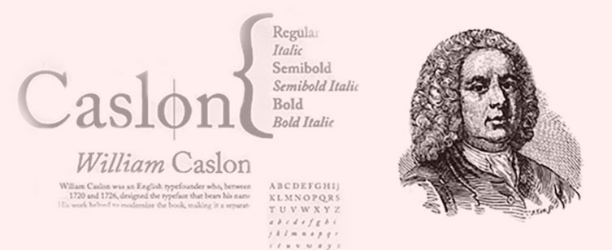
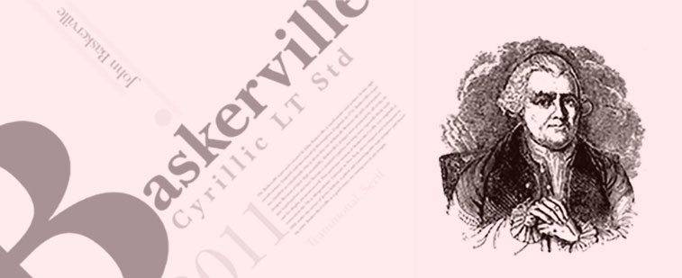

A Brief History of Type
Part 1 – The Pioneers of European Type Design
Nicholas Jenson
Nicholas Jenson (1420 – 1480) was a French engraver, pioneer, printer and type designer who carried out most of his work in Venice, Italy. Jenson acted as Master of the French Royal Mint at Tours, and is credited with being the creator of one of the finest early Roman typefaces.
Nicholas Jenson has been something of iconic figure among students of early printing since the nineteenth century when the aesthete William Morris praised the beauty and perfection of his Roman font. Jenson is an important figure in the early history of printing and a pivotal force in the emergence of Venice as one of the first great centers of the printing press.
Claude Garamont
Claude Garamont (1510 – 1561), known commonly as Claude Garamond, was a French type designer, publisher and punchcutter based in Paris. Garamond worked as an engraver of punches, the masters used to stamp matrices, the moulds used to cast metal type. He worked in the tradition of what is now called old-style serif letter design, that produced letters with a relatively organic structure resembling handwriting with a pen but with a slightly more structured and upright design.
Garamond is now considered one of the leading type designers of all time. He is recognised to this day for the elegance of his typefaces.
William Caslon
William Caslon (1692 – 1766), also known as William Caslon the Elder, was an English gunsmith and designer of typefaces. The distinction and legibility of his type secured him the patronage of the leading printers of the day in England and the continent. His typefaces transformed English type design and first established an English national typographic style.
Caslon was born in Cradley, Worcestershire in 1692 and trained as an engraver in nearby Birmingham. In 1716, he started business in London as an engraver of gun locks and barrels and as a bookbinder's tool cutter. Having contact with printers, he was induced to fit up a type foundry, largely through the encouragement of William Bowyer.
John Baskerville
John Baskerville (1706 – 1775) was an English businessman whose entrepreneurial attentions included japanning and papier-mâché; he is, however, best remembered as a typographer and printer, not least for the design of the eponymous typeface which, to this very day, bears his name.
List of typefaces
| Designer | Typeface | Foundary |
|---|---|---|
| Nicolas Jenson | Adobe Jenson | Adobe |
| Jenson Classico | Omnibus Typografi | |
| LTC Jenson | Lanston Type | |
| Claude Garamont | Berthold Garamond | Berthold |
| Simoncini Garamond | Linotype | |
| Adobe Garamond | Adobe | |
| William Caslon | Caslon 540 | Bitstream |
| ITC Founders Caslon | ITC Library | |
| Adobe Caslon | Adobe | |
| John Baskerville | Baskerville | Monotype |
| Baskerville Old Face | Scangraphic | |
| Baskerville No.2 | Bitstream | |
| Giambattista Bodoni | Bodoni | Adobe |
| Bauer Bodoni | Linotype | |
| Bodoni Classic | Wiescher Design |